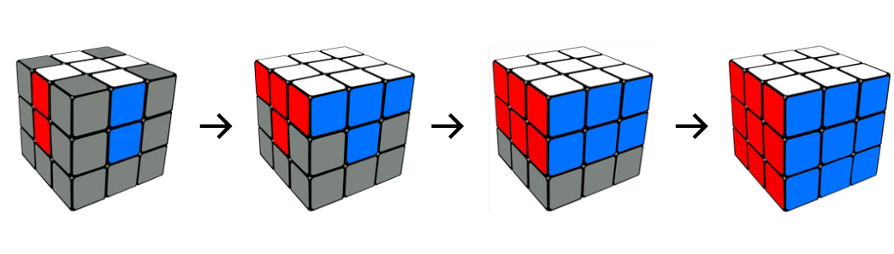
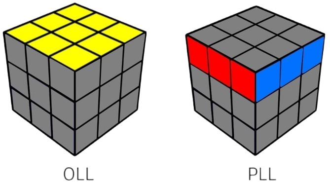
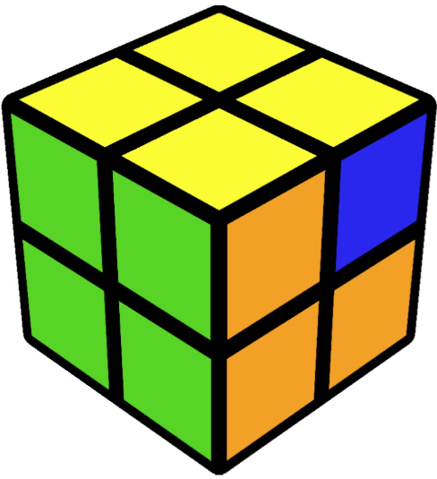

03 – HOW DO THEY EVEN SOLVE THIS THING?
⚠️ SPOILER ALERT
If you've never solved a Rubik's Cube before, stop here.
Seriously. Give it a shot yourself first, because once you learn a solving method,
you can never really experience that “I figured this out myself” feeling in quite the same way again.
So if you want to figure it out yourself, go scramble a cube and give it a shot.
Still here? Alright.
So... how do you actually solve it?
You might think the obvious approach is to solve one face at a time.
But there's a problem: solving the next face can mess up the pieces you've already solved.
The most common beginner method gets around this by solving the cube layer by layer:
CROSS → FIRST LAYER → SECOND LAYER → LAST LAYER

Simple enough in theory. But how do people solve it in seconds?
Speedcubers take the same basic idea much further with the popular advanced method CFOP
C → Cross
F → F2L (First Two Layers)
O → OLL (Orient Last Layer)
P → PLL (Permute Last Layer)

Instead of solving one piece at a time, F2L lets them solve pairs of pieces together.
Then, instead of slowly fixing the last layer piece by piece, OLL and PLL break it down into just two stages.
But there's a price to pay.
To recognize and solve every possible OLL and PLL case, a full CFOP solver can memorize up to:
57 OLL + 21 PLL = 78 algorithms
So while it looks like speedcubers are frantically turning a cube...
their brain is recognizing patterns, while their hands do the rest.
That being said...Want to solve your first 3×3?
If you’ve got a cube nearby, you're officially ready.
Click here to solve your first cube
Once you get your first solve, trust me—you'll want to go faster.
Popular Cubing Channels that helped me get better:

J Perm
CubeHead